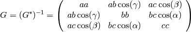
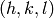
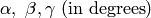

The purpose of this document is to explain how Mantid is using information about unit cells and their orientation with respect to the laboratory frame. For a detailed description, see http://github.com/mantidproject/documents/blob/master/Design/UBMatriximplementationnotes.pdf
The physics of a system studied by neutron scattering is described by the conservation of energy and momentum. In the laboratory frame:


Note that the left side in the above equations refer to what is happening to the lattice, not to the neutron.
Let’s assume that we have a periodic lattice, described by lattice
parameters  . The reciprocal
lattice will be described by parameters
. The reciprocal
lattice will be described by parameters
 . Note that
Mantid uses
. Note that
Mantid uses  type of notation, like in
crystallography.
type of notation, like in
crystallography.
For such a lattice, the physics will be described in terms of reciprocal lattice parameters by

The  matrix formalism relates
matrix formalism relates  and
and
 with the following equation:
with the following equation:

The  matrix transforms the
matrix transforms the  triplet
into a Cartesian system, with the first axis along
triplet
into a Cartesian system, with the first axis along
 , the second in the plane defined by
and
, the second in the plane defined by
and  , and the third axis
perpendicular to this plane. In the Busing and Levi convention (W. R.
Busing and H. A. Levy, Angle calculations for 3- and 4-circle X-ray and
neutron diffractometers - Acta Cryst. (1967). 22, 457-464):
, and the third axis
perpendicular to this plane. In the Busing and Levi convention (W. R.
Busing and H. A. Levy, Angle calculations for 3- and 4-circle X-ray and
neutron diffractometers - Acta Cryst. (1967). 22, 457-464):

The  matrix represents the rotation from this Cartesian
coordinate frame to the Cartesian coordinate frame attached to the
innermost axis of the goniometer that holds the sample.
matrix represents the rotation from this Cartesian
coordinate frame to the Cartesian coordinate frame attached to the
innermost axis of the goniometer that holds the sample.
The  matrix is the rotation matrix of the goniometer
matrix is the rotation matrix of the goniometer
Other useful equations:


The distance in reciprocal space to the  plane is given by

The distance in real space to the plane is
given by 
The angle between  and
and  is given by
is given by

The UnitCell class provides the following functions to access direct and reciprocal lattices. The examples can be run from the script console in Mantid
| Function | Example | Description |
|---|---|---|
| UnitCell() | u = UnitCell() | default constructor, with  |
| UnitCell(other unit cell) | u = UnitCell()
u2 = UnitCell(u)
|
copy constructor |
| UnitCell(a,b,c) | u = UnitCell(2,3.5,4) | constructor using  |
| UnitCell(a,b,c,alpha,beta,gamma,Unit = unit) | u = UnitCell(2,3.5,4,90,90,90)
u = UnitCell(2,3.5,4,90,90,90,Unit = Degrees)
u = UnitCell(2,3.5,4,0.5*math.pi,0.5*math.pi,0.5*math.pi,Unit = Radians)
|
constructor using  . The optional parameter “Unit” controls the units for the angles, and can have the value of “Degrees” or “Radians”. By default Unit = Degrees . The optional parameter “Unit” controls the units for the angles, and can have the value of “Degrees” or “Radians”. By default Unit = Degrees |
a()
b()
c()
|
u = UnitCell(2,3.5,4)
print u.c()
|
returns lattice parameters  |
a1()
a2()
a3()
|
u = UnitCell(2,3.5,4)
print u.a2()
|
returns lattice parameters  . Note: “International Tables for Crystallography” notation . Note: “International Tables for Crystallography” notation |
alpha()
beta()
gamma()
|
u = UnitCell(2,3.5,4,95,95,105)
print u.alpha()
|
returns lattice parameters  |
alpha1()
alpha2()
alpha3()
|
u = UnitCell(2,2,4,90,90,60)
print u.alpha3()
|
returns lattice parameters  . Note: “International Tables for Crystallography” notation . Note: “International Tables for Crystallography” notation |
astar()
bstar()
cstar()
|
u = UnitCell(2,3.5,4)
print u.cstar()
|
returns reciprocal lattice parameters  |
b1()
b2()
b3()
|
u = UnitCell(2,3.5,4)
print u.b2()
|
returns lattice parameters  . Note: “International Tables for Crystallography” notation . Note: “International Tables for Crystallography” notation |
alphastar()
betastar()
gammastar()
|
u = UnitCell(2,3.5,4,95,95,105)
print u.alphastar()
|
returns lattice parameters  |
beta1()
beta2()
beta3()
|
u = UnitCell(2,2,4,90,90,60)
print u.beta3()
|
returns lattice parameters  . Note: “International Tables for Crystallography” notation . Note: “International Tables for Crystallography” notation |
| set(a,b,c,alpha,beta,gamma,Unit=unit) | u = UnitCell()
u.set(2,3.5,4,90,90,90)
u.set(2,3.5,4,90,90,90,Unit = Degrees)
u.set(2,3.5,4,0.5*math.pi,0.5*math.pi,0.5*math.pi,Unit = Radians)
|
sets values. The optional parameter “Unit” controls the units for the angles, and can have the value of “Degrees” or “Radians”. By default Unit = Degrees |
seta(a)
setb(b)
setc(c)
|
u = UnitCell(2,3.5,4)
u.setc(5)
print u.c()
|
sets lattice parameters |
setalpha(alpha,Unit=unit)
setbeta(beta,Unit=unit)
setgamma(gamma,Unit=unit)
|
u = UnitCell()
u.setalpha(88)
u.setbeta(95,Unit = Degrees)
u.setgamma(0.5*math.pi,Unit = Radians)
|
sets  values. The optional parameter “Unit” controls the units for the angles, and can have the value of “Degrees” or “Radians”. By default Unit = Degrees values. The optional parameter “Unit” controls the units for the angles, and can have the value of “Degrees” or “Radians”. By default Unit = Degrees |
d(h,k,l)
d(V3D vector)
|
u = UnitCell(2,3.5,4)
print u.d(1,1,1)
print u.d(V3D(1,1,1))
|
returns  -spacing -spacing  for given h,k,l coordinates for given h,k,l coordinates |
dstar(h,k,l)
dstar(V3D vector)
|
u = UnitCell(2,3.5,4)
print u.dstar(1,1,1)
print u.dstar(V3D(1,1,1))
|
returns  for given h,k,l coordinates for given h,k,l coordinates |
| recAngle(h1,k1,l1,h2,k2,l2,Unit=unit) | u = UnitCell(2,3.5,4)
print u.recAngle(1,0,0,1,1,0)
print u.recAngle(1,0,0,1,1,1,Unit=Degrees)
print u.recAngle(1,0,0,1,1,0,Unit = Radians)
|
returns the angle in reciprocal space between vectors given by  and and  . The optional parameter “Unit” controls the units for the angles, and can have the value of “Degrees” or “Radians”. By default Unit = Degrees . The optional parameter “Unit” controls the units for the angles, and can have the value of “Degrees” or “Radians”. By default Unit = Degrees |
volume()
recVolume()
|
u = UnitCell(2,3.5,4)
print u.volume()
print u.recVolume()
|
return the volume of the direct or reciprocal unit cell  |
getB()
getBinv()
|
u = UnitCell(2,3.5,4)
print u.getB()
print u.getBinv()
|
return the  and and  matrices matrices |
getG()
getGstar()
|
u = UnitCell(2,3.5,4)
print u.getG()
print u.getGstar()
|
return the  and and  metric tensors of the direct and reciprocal lattices metric tensors of the direct and reciprocal lattices |
| recalculateFromGstar(Gstar 2D 3x3 array) | newGstar=array([[2,0,0],[0,0.5,0],[0,0,1]])
u=UnitCell()
u.recalculateFromGstar(newGstar)
|
recalculates the lattice parameters from the new and sets them to the current UnitCell object |
All the functions defined for UnitCell are inherited by the OrientedLattice objects. In addition, the following functions are defined for OrientedLattice only:
| Function | Example | Description |
|---|---|---|
| OrientedLattice() | o = OrientedLattice() | default constructor, with . The  matrix is set to identity matrix is set to identity |
| OrientedLattice(other oriented lattice) | o = OrientedLattice()
o2 = OrientedLattice(o)
|
copy constructor |
| OrientedLattice(a,b,c) | o = OrientedLattice(2,3.5,4) | constructor using . The matrix is set to identity |
| OrientedLattice(a,b,c,alpha,beta,gamma,Unit = unit) | o = OrientedLattice(2,3.5,4,90,90,90)
o = OrientedLattice(2,3.5,4,90,90,90,Unit = Degrees)
o = OrientedLattice(2,3.5,4,0.5*math.pi,0.5*math.pi,0.5*math.pi,Unit = Radians)
|
constructor using . The optional parameter “Unit” controls the units for the angles, and can have the value of “Degrees” or “Radians”. By default Unit = Degrees. The matrix is set to identity |
| OrientedLattice(unit cell) | u=UnitCell(2,3,4)
o = OrientedLattice(u)
|
constructor from UnitCell. The matrix is set to identity |
getU()
getUB()
|
o.OrientedLattice(2,3.5,4)
print u.getU()
print u.getUB()
|
return the and  matrices matrices |
setU()
setUB()
|
o.OrientedLattice(2,3.5,4)
newU=array([[0,1,0],[1,0,0],[0,0,-1]])
o.setU(newU)
newUB=array([[2,1,0],[1,2,0],[2,0,-1]])
o.setUB(newUB)
|
sets the and matrices. for setUB function, it will calculate first the lattice parameters, then the matrix, and then . See Note about orientation |
| setUFromVectors(v1,v2) | o.OrientedLattice(2,3.5,4)
o.setUFromVectors([1,0,0],[0,1,0])
o.setUFromVectors(array([1,0,0]),array([0,1,0]))
o.setUFromVectors(V3D(1,0,0),V3D(0,1,0))
|
recalculates and sets the matrix, such as the first vector is along the beam direction, and the second vector is in the horizontal plane. See Note about orientation. In python, the v1 and v2 vectors can be of type V3D, or length 3 list, or length 3 numpy array, not necessarily the same |
getuVector()
getvVector()
|
o.OrientedLattice(2,3.5,4)
o.setUFromVectors([5,5,0],[-2,1,0])
print o.getuVector()
print o.getvVector()
|
getuVector returns a vector along beam direction, while getvVector returns a vector in the horizontal plane, perpendicular to the beam direction (see http://horace.isis.rl.ac.uk/Getting_started). See Note about orientation |
 direction. For an orthogonal lattice with
direction. For an orthogonal lattice with  along
along
 , and
, and
 along
along  , the
, the